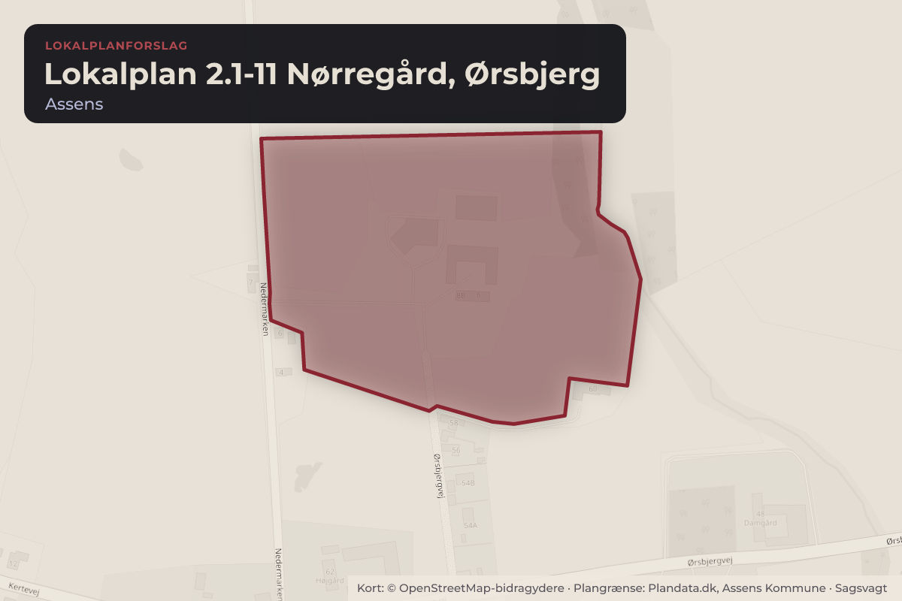

På dagsordenen 1. december, Miljø- og Teknikudvalget, Assens
Endelig vedtagelse af lokalplan 2.1-11 Nørregård, Ørsbjerg
Byggeri og lokalplanerKultur og fritid

Kort: © OpenStreetMap-bidragydere. Plangrænse: Plandata.dk, Assens Kommune.
Kort fortalt
- Hvem
- Miljø- og Teknikudvalget, Assens Kommune
- Hvornår
- Tirsdag 1. december 2026
- Status
- På dagsordenen. Sagen behandles på mødet.
Er noget forkert her? Skriv til os
Hvad kan du gøre?
- Skriv til politikerne
- Udvalgets møder er lukkede, men du kan skrive til medlemmerne før mødet tirsdag 1. december 2026. Du finder dem på assens.dk.
Læs hele sagen Kommunens egen tekst
Indstilling
Direktøren for By, Land og Kultur indstiller at Lokalplan 2.1-11 Nørregård, Ørsbjerg vedtages
endeligt.
Beslutningstema
Lokalplan 2.1-11 er udarbejdet for at muliggøre en udvidelse af Bernhards hus på
Nedermarken, Ørsbjerg..
Lokalplanen har været i 4 ugers høring fra den 25. september til 25. oktober 2026 og skal nu
vedtages endeligt.
Sagsfremstilling
Lokalplanens formål, er at give mulighed for en udvidelse af den selvejende institution
Bernhards Hus som er beliggende på Nedermarken i Ørsbjerg.
Lokalplanen fastlægger rammerne for ny fremtidig udvidelse af Bernhardhus. Området skal
forblive i landzone of lokalplanen er derfor tillagt bonusvirkning således at den afløser
eventuelle landzonetilladelser til ny bebyggelse.
Lokalplanen muliggør at der kan ske en udvidelse af institutionen med flere boenheder, bedre
personalefaciliteter samt mulighed for mindre erhvervstyper i naturlig tilknytning til den
landbrugsdrift der også er på ejendommen.
er at skabe mulighed for en udvidelse af bostedet
Lokalplanen har nu været i 4 ugers høring, der er i den forbindelse indkommet 1 høringssvar,
fra en borger i nærområdet. Høringssvaret vedrører vejadgang til lokalplanområdet.
Det indkomne høringssvar har ikke givet anledning til en ændring i lokalplanen, da det vedrører
forhold udenfor lokalplanområdet.
Høringssvaret er sendt videre til vejmyndigheden, som vil sagsbehandle dette i en selvstændig
sag.
Lovgrundlag
Lov om Planlægning
Beslutningskompetence
Miljø og Teknikudvalget.
Kilde: Assens Kommune, Miljø- og Teknikudvalget, dagsorden fra mødet tirsdag 1. december 2026, punkt 15. Læs den originale sag hos kommunen.